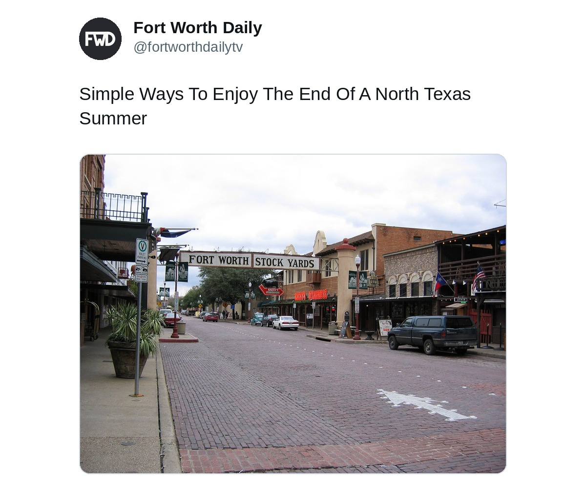

FWD
Fort Worth Daily
Just now · 🌎 · culture · template writer
Just now · 🌎 · culture · template writer
It is one of the genuine pleasures of living here, and it is worth planning for. Until then, there are still several weeks of triple digits to negotiate.

FWD
story + scoring
{
"source": "Fort Worth Weekly",
"kind": "rss",
"score": 0.7782,
"relevance": 1,
"url": "https://www.fwweekly.com/2026/11/23/simple-ways-to-enjoy-the-end-of-a-north-texas-summer/",
"image_license": "wikimedia-cc",
"image_credit": "Photo: 4tiggy via Wikimedia Commons (CC BY-SA 4.0)"
}